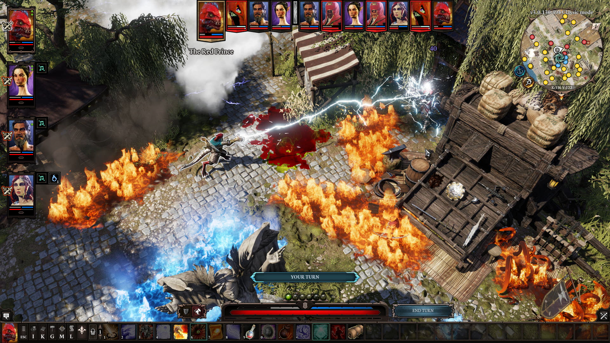
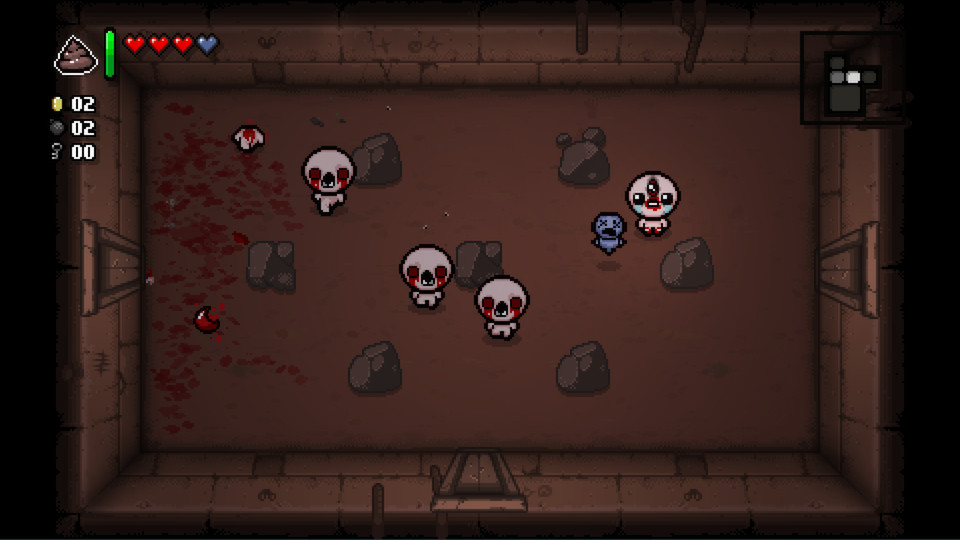
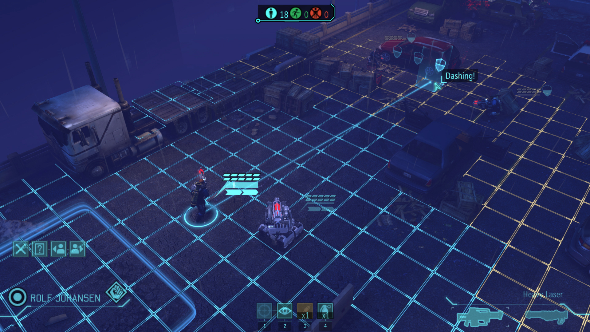
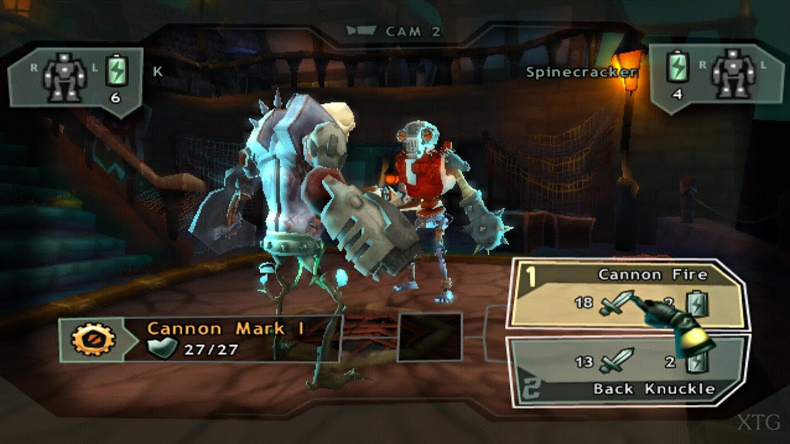

I always was a fan of the rpg games and the rogue likes. I like the feeling of every new character that I create will be unique, this combined with the randomness of the roguelikes is what I want for Mech-Geon. Here are some games that I took as reference for mechanics.
Divinity Original Sin 2
I love how in this game everything can interact with everything, allowing the player to create a lot of solutions for the same problem.

The Binding of Isaac
Speaking about unique, similar to divinity, this game gives to the player tha ability to combine every item to each other in the game, but all the items are random, so each run will be different to the other.

XCOM
For Mech-Geon I want a grid-based combat, very similar to XCOM but with only one character insted of a squad.

Monster Lab
Last but not least, I played this game when I was a child and I loved it. You build your monster and the parts that you use will define the attacks, strengths, and weaknesses of your character.
There are more games that I was inspired by but these three are the most, and these will be the base for Mech-Geon's base. The idea is have a solid base of Turn-based rpg core with roguelike elements like procedural maps, weapons, objects and enemies. Also mix different genres in other ways, for example, one level has grid based movements, but then in the lobby, the player will use controls like a top down shooter.